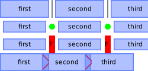
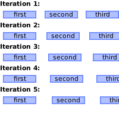
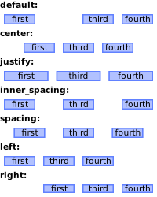
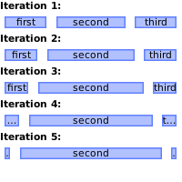
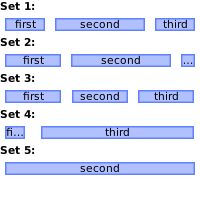

Class wibox.layout.ratio
A layout filling all the available space.
Each widget is assigned a ratio (percentage) of the total space. Multiple methods are available to ajust this ratio.

Usage:
local w = wibox.widget {
generic_widget( 'first' ),
generic_widget( 'second' ),
generic_widget( 'third' ),
layout = wibox.layout.ratio.horizontal
}
w:ajust_ratio(2, 0.44, 0.33, 0.22)
Info:
- Copyright: 2016 Emmanuel Lepage Vallee
- Author: Emmanuel Lepage Vallee
Object properties
| children | Get all direct children of this layout. |
| spacing_widget | The widget used to fill the spacing between the layout elements. |
| spacing | Add spacing between each layout widgets. |
| inner_fill_strategy | Set how the space of invisible or 0x0 sized widget is redistributed. |
| forced_height | Force a widget height. |
| forced_width | Force a widget width. |
| opacity | The widget opacity (transparency). |
| visible | The widget visibility. |
Signals
| widget::layout_changed | When the layout (size) change. |
| widget::redraw_needed | When the widget content changed. |
| button::press | When a mouse button is pressed over the widget. |
| button::release | When a mouse button is released over the widget. |
| mouse::enter | When the mouse enter a widget. |
| mouse::leave | When the mouse leave a widget. |
Methods
| wibox.layout.ratio:set (index, widget2) | Set a widget at a specific index, replace the current one. |
| wibox.layout.ratio:replace_widget (widget, widget2[, recursive=false]) | Replace the first instance of widget in the layout with widget2. |
| wibox.layout.ratio:swap (index1, index2) | Swap 2 widgets in a layout. |
| wibox.layout.ratio:swap_widgets (widget1, widget2[, recursive=false]) | Swap 2 widgets in a layout. |
| wibox.layout.ratio:reset (layout) | Reset a ratio layout. |
| wibox.layout.ratio:inc_ratio (index, increment) | Increase the ratio of “widget” If the increment produce an invalid ratio (not between 0 and 1), the method do nothing. |
| wibox.layout.ratio:inc_widget_ratio (widget, increment) | Increment the ratio of the first instance of widget If the increment produce an invalid ratio (not between 0 and 1), the method do nothing. |
| wibox.layout.ratio:set_ratio (index, percent) | Set the ratio of the widget at position index |
| wibox.layout.ratio:get_ratio (index) | Get the ratio at index. |
| wibox.layout.ratio:set_widget_ratio (widget, percent) | Set the ratio of widget to percent. |
| wibox.layout.ratio:ajust_ratio (index, before, itself, after) | Update all widgets to match a set of a ratio. |
| wibox.layout.ratio:ajust_widget_ratio (widget, before, itself, after) | Update all widgets to match a set of a ratio |
| wibox.layout.ratio:add (...) | Add some widgets to the given fixed layout Signal: widget::added The argument are the widgets |
| wibox.layout.ratio:remove (index) | Remove a widget from the layout Signal: widget::removed The arguments are the widget and the index |
| wibox.layout.ratio:insert (index, widget) | Insert a new widget in the layout at position index
Signal: widget::inserted The arguments are the widget and the index |
| wibox.layout.ratio:horizontal (...) | Returns a new horizontal ratio layout. |
| wibox.layout.ratio:vertical (...) | Returns a new vertical ratio layout. |
| wibox.layout.ratio:get_all_children () | Get all direct and indirect children widgets. |
| wibox.layout.ratio:setup (args) | Set a declarative widget hierarchy description. |
| wibox.layout.ratio:buttons (_buttons) | Set/get a widget’s buttons. |
| wibox.layout.ratio:emit_signal_recursive (signal_name, ...) | Emit a signal and ensure all parent widgets in the hierarchies also forward the signal. |
| wibox.layout.ratio:emit_signal (name, ...) | Emit a signal. |
| wibox.layout.ratio:connect_signal (name, func) | Connect to a signal. |
| wibox.layout.ratio:weak_connect_signal (name, func) | Connect to a signal weakly. |
Object properties
- children
-
Get all direct children of this layout.
Type:
- layout The layout you are modifying.
- spacing_widget
-
The widget used to fill the spacing between the layout elements.
By default, no widget is used.

Type:
- widget
Usage:
-- Use the separator widget directly local w1 = wibox.widget { spacing = 10, spacing_widget = wibox.widget.separator, layout = wibox.layout.ratio.horizontal } -- Use a standard declarative widget construct local w2 = wibox.widget { spacing = 10, spacing_widget = { color = '#00ff00', shape = gears.shape.circle, widget = wibox.widget.separator, }, layout = wibox.layout.ratio.horizontal } -- Use composed widgets local w3 = wibox.widget { spacing = 10, spacing_widget = { { text = 'F', widget = wibox.widget.textbox, }, bg = '#ff0000', widget = wibox.container.background, }, layout = wibox.layout.ratio.horizontal } -- Use negative spacing to create a powerline effect local w4 = wibox.widget { spacing = -12, spacing_widget = { color = '#ff0000', shape = gears.shape.powerline, widget = wibox.widget.separator, }, layout = wibox.layout.ratio.horizontal }
- spacing
-
Add spacing between each layout widgets.

Type:
- spacing number Spacing between widgets.
Usage:
for i=1, 5 do local w = wibox.widget { first, second, third, spacing = i*3, layout = wibox.layout.ratio.horizontal } end
- inner_fill_strategy
-
Set how the space of invisible or
0x0sized widget is redistributed.Possible values:
- “default”: Honor the ratio and do not redistribute the space.
- “justify”: Distribute the space among remaining widgets.
- “center”: Squash remaining widgets and leave equal space on both side.
- “inner_spacing”: Add equal spacing between all widgets.
- “spacing”: Add equal spacing between all widgets and on the outside.
- “left”: Squash remaining widgets and leave empty space on the left.
- “right”: Squash remaining widgets and leave empty space on the right.

Type:
- inner_fill_strategy string One of the value listed above.
- forced_height
-
Force a widget height.
Type:
- height
number or nil
The height (
nilfor automatic)
- height
number or nil
The height (
- forced_width
-
Force a widget width.
Type:
- width
number or nil
The width (
nilfor automatic)
- width
number or nil
The width (
- opacity
-
The widget opacity (transparency).
Type:
- opacity number The opacity (between 0 and 1) (default 1)
- visible
-
The widget visibility.
Type:
- boolean
Signals
- widget::layout_changed
-
When the layout (size) change.
This signal is emitted when the previous results of
:layout()and:fit()are no longer valid. Unless this signal is emitted,:layout()and:fit()must return the same result when called with the same arguments.See also:
- widget::redraw_needed
-
When the widget content changed.
This signal is emitted when the content of the widget changes. The widget will
be redrawn, it is not re-layouted. Put differently, it is assumed that
:layout()and:fit()would still return the same results as before.See also:
- button::press
-
When a mouse button is pressed over the widget.
Arguments:
- lx number The horizontal position relative to the (0,0) position in the widget.
- ly number The vertical position relative to the (0,0) position in the widget.
- button number The button number.
- mods table The modifiers (mod4, mod1 (alt), Control, Shift)
- find_widgets_result The entry from the result of
wibox.drawable:find_widgets for the position that the mouse hit.
- drawable wibox.drawable The drawable containing the widget.
- widget widget The widget being displayed.
- hierarchy wibox.hierarchy The hierarchy managing the widget’s geometry.
- x number An approximation of the X position that the widget is visible at on the surface.
- y number An approximation of the Y position that the widget is visible at on the surface.
- width number An approximation of the width that the widget is visible at on the surface.
- height number An approximation of the height that the widget is visible at on the surface.
- widget_width number The exact width of the widget in its local coordinate system.
- widget_height number The exact height of the widget in its local coordinate system.
See also:
- button::release
-
When a mouse button is released over the widget.
Arguments:
- lx number The horizontal position relative to the (0,0) position in the widget.
- ly number The vertical position relative to the (0,0) position in the widget.
- button number The button number.
- mods table The modifiers (mod4, mod1 (alt), Control, Shift)
- find_widgets_result The entry from the result of
wibox.drawable:find_widgets for the position that the mouse hit.
- drawable wibox.drawable The drawable containing the widget.
- widget widget The widget being displayed.
- hierarchy wibox.hierarchy The hierarchy managing the widget’s geometry.
- x number An approximation of the X position that the widget is visible at on the surface.
- y number An approximation of the Y position that the widget is visible at on the surface.
- width number An approximation of the width that the widget is visible at on the surface.
- height number An approximation of the height that the widget is visible at on the surface.
- widget_width number The exact width of the widget in its local coordinate system.
- widget_height number The exact height of the widget in its local coordinate system.
See also:
- mouse::enter
-
When the mouse enter a widget.
Arguments:
- find_widgets_result The entry from the result of
wibox.drawable:find_widgets for the position that the mouse hit.
- drawable wibox.drawable The drawable containing the widget.
- widget widget The widget being displayed.
- hierarchy wibox.hierarchy The hierarchy managing the widget’s geometry.
- x number An approximation of the X position that the widget is visible at on the surface.
- y number An approximation of the Y position that the widget is visible at on the surface.
- width number An approximation of the width that the widget is visible at on the surface.
- height number An approximation of the height that the widget is visible at on the surface.
- widget_width number The exact width of the widget in its local coordinate system.
- widget_height number The exact height of the widget in its local coordinate system.
See also:
- find_widgets_result The entry from the result of
wibox.drawable:find_widgets for the position that the mouse hit.
- mouse::leave
-
When the mouse leave a widget.
Arguments:
- find_widgets_result The entry from the result of
wibox.drawable:find_widgets for the position that the mouse hit.
- drawable wibox.drawable The drawable containing the widget.
- widget widget The widget being displayed.
- hierarchy wibox.hierarchy The hierarchy managing the widget’s geometry.
- x number An approximation of the X position that the widget is visible at on the surface.
- y number An approximation of the Y position that the widget is visible at on the surface.
- width number An approximation of the width that the widget is visible at on the surface.
- height number An approximation of the height that the widget is visible at on the surface.
- widget_width number The exact width of the widget in its local coordinate system.
- widget_height number The exact height of the widget in its local coordinate system.
See also:
- find_widgets_result The entry from the result of
wibox.drawable:find_widgets for the position that the mouse hit.
Methods
- wibox.layout.ratio:set (index, widget2)
-
Set a widget at a specific index, replace the current one.
Signal: widget::replaced The argument is the new widget and the old one
and the index.
- index number A widget or a widget index
- widget2 The widget to take the place of the first one
Returns:
-
boolean
If the operation is successful
- wibox.layout.ratio:replace_widget (widget, widget2[, recursive=false])
-
Replace the first instance of widget in the layout with
widget2. Signal: widget::replaced The argument is the new widget and the old one and the index.- widget The widget to replace
- widget2 The widget to replace widget with
- recursive boolean Dig in all compatible layouts to find the widget. (default false)
Returns:
-
boolean
If the operation is successful
- wibox.layout.ratio:swap (index1, index2)
-
Swap 2 widgets in a layout.
Signal: widget::swapped The arguments are both widgets and both (new) indexes.
- index1 number The first widget index
- index2 number The second widget index
Returns:
-
boolean
If the operation is successful
- wibox.layout.ratio:swap_widgets (widget1, widget2[, recursive=false])
-
Swap 2 widgets in a layout.
If widget1 is present multiple time, only the first instance is swapped
Signal: widget::swapped The arguments are both widgets and both (new) indexes.
if the layouts not the same, then only
widget::replacedwill be emitted.- widget1 The first widget
- widget2 The second widget
- recursive boolean Dig in all compatible layouts to find the widget. (default false)
Returns:
-
boolean
If the operation is successful
- wibox.layout.ratio:reset (layout)
-
Reset a ratio layout. This removes all widgets from the layout.
Signal: widget::reset
- layout The layout you are modifying.
- wibox.layout.ratio:inc_ratio (index, increment)
-
Increase the ratio of “widget”
If the increment produce an invalid ratio (not between 0 and 1), the method
do nothing.

- index number The widget index to change
- increment number An floating point value between -1 and 1 where the end result is within 0 and 1
Usage:
local ret = wibox.layout.fixed.vertical() local w = wibox.widget { first, second, third, layout = wibox.layout.ratio.horizontal } for i=1, 5 do w:inc_ratio(2, 0.1) end
- wibox.layout.ratio:inc_widget_ratio (widget, increment)
-
Increment the ratio of the first instance of widget
If the increment produce an invalid ratio (not between 0 and 1), the method
do nothing.
- widget The widget to ajust
- increment number An floating point value between -1 and 1 where the end result is within 0 and 1
- wibox.layout.ratio:set_ratio (index, percent)
-
Set the ratio of the widget at position
index- index number The index of the widget to change
- percent number An floating point value between 0 and 1
- wibox.layout.ratio:get_ratio (index)
-
Get the ratio at
index.- index number The widget index to query
Returns:
-
number
The index (between 0 and 1)
- wibox.layout.ratio:set_widget_ratio (widget, percent)
-
Set the ratio of widget to
percent.- widget widget The widget to ajust.
- percent number A floating point value between 0 and 1.
- wibox.layout.ratio:ajust_ratio (index, before, itself, after)
-
Update all widgets to match a set of a ratio.
The sum of before, itself and after must be 1 or nothing will be done.

- index number The index of the widget to change
- before number The sum of the ratio before the widget
- itself number The ratio for “widget”
- after number The sum of the ratio after the widget
Usage:
local ret = wibox.layout.fixed.vertical() local w = wibox.widget { first, second, third, layout = wibox.layout.ratio.horizontal } local values = { {0.25, 0.50, 0.25}, {0.33, 0.55, 0.12}, {0.123, 0.456, 0.789}, {0.123, 0, 0.789}, {0, 1, 0}, } for i=1, 5 do w:ajust_ratio(2, unpack(values[i])) end
- wibox.layout.ratio:ajust_widget_ratio (widget, before, itself, after)
-
Update all widgets to match a set of a ratio
- widget The widget to ajust
- before number The sum of the ratio before the widget
- itself number The ratio for “widget”
- after number The sum of the ratio after the widget
- wibox.layout.ratio:add (...)
-
Add some widgets to the given fixed layout
Signal: widget::added The argument are the widgets
- ... widget Widgets that should be added (must at least be one)
- wibox.layout.ratio:remove (index)
-
Remove a widget from the layout
Signal: widget::removed The arguments are the widget and the index
- index number The widget index to remove
Returns:
-
boolean
index If the operation is successful
- wibox.layout.ratio:insert (index, widget)
-
Insert a new widget in the layout at position
indexSignal: widget::inserted The arguments are the widget and the index- index number The position
- widget The widget
- wibox.layout.ratio:horizontal (...)
-
Returns a new horizontal ratio layout. A ratio layout shares the available space
equally among all widgets. Widgets can be added via :add(widget).
- ... widget Widgets that should be added to the layout.
- wibox.layout.ratio:vertical (...)
-
Returns a new vertical ratio layout. A ratio layout shares the available space
equally among all widgets. Widgets can be added via :add(widget).
- ... widget Widgets that should be added to the layout.
- wibox.layout.ratio:get_all_children ()
-
Get all direct and indirect children widgets.
This will scan all containers recursively to find widgets
Warning: This method it prone to stack overflow id the widget, or any of its
children, contain (directly or indirectly) itself.
Returns:
-
table
The children
- wibox.layout.ratio:setup (args)
-
Set a declarative widget hierarchy description.
See The declarative layout system
- args An array containing the widgets disposition
- wibox.layout.ratio:buttons (_buttons)
-
Set/get a widget’s buttons.
- _buttons The table of buttons that should bind to the widget.
- wibox.layout.ratio:emit_signal_recursive (signal_name, ...)
-
Emit a signal and ensure all parent widgets in the hierarchies also
forward the signal. This is useful to track signals when there is a dynamic
set of containers and layouts wrapping the widget.
- signal_name string
- ... Other arguments
- wibox.layout.ratio:emit_signal (name, ...)
-
Emit a signal.
- name string The name of the signal.
- ... Extra arguments for the callback functions. Each connected function receives the object as first argument and then any extra arguments that are given to emit_signal().
- wibox.layout.ratio:connect_signal (name, func)
-
Connect to a signal.
- name string The name of the signal.
- func function The callback to call when the signal is emitted.
- wibox.layout.ratio:weak_connect_signal (name, func)
-
Connect to a signal weakly.
This allows the callback function to be garbage collected and automatically disconnects the signal when that happens.
Warning: Only use this function if you really, really, really know what you are doing.
- name string The name of the signal.
- func function The callback to call when the signal is emitted.